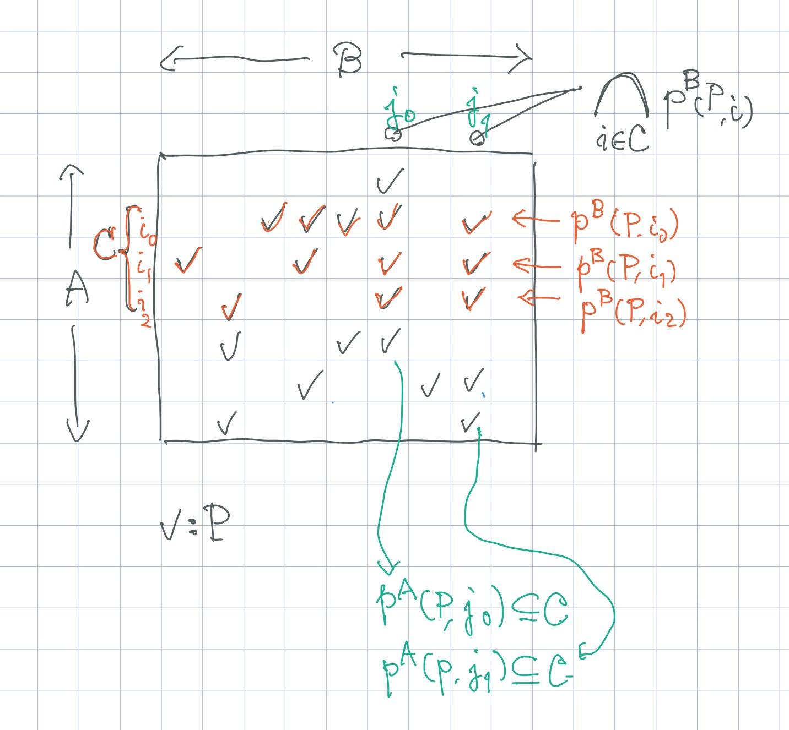

非負整数 $n$ に対して，$\bar{n} = \{0, 1, \dots, n - 1\}$ と書く．
問題の本質部分
正整数 $N$, $M$ と， 各 $i \in \bar{M}$ について，$S_i \subseteq N$ が与えられる． $X \subseteq N$ であって，すべての $i \in \bar{M}$ に対して $X \cap S_i \neq \varnothing$ であるものの数を mod 998244353 で求めよ．
制約
$N \leq 2\times 10^5$，$M \leq 20$，
解法
ほとんど，公式解説 に書いてあることそのままだが， 多少，行間を埋めている．
条件を満たさないものを数えて，$2^N$ から引く．つまり，$i \in \bar{M}$ に対し， $A_i := \{ X \subseteq N \mid X \cap S_i = \varnothing \}$ として， $\text{ans} := |\bigcup_{i \in \bar{M}} A_i|$ を求めることになる．
包除原理によって， $\text{ans} = \sum_{Y \subseteq \bar{M}, Y \neq \varnothing} (-1)^{|Y| + 1} | \bigcap_{i \in Y} A_i |$ ．
この $\bigcap_{i \in Y} A_i$ について考えると， $X \in \bigcap_{i \in Y} A_i \iff \forall i \in Y.\; X \cap S_i = \varnothing \iff X \subseteq (N \setminus \bigcup_{i \in Y} S_i) \iff X \subseteq \bigcap_{i \in Y} (N \setminus S_i) $ だから，$\alpha(Y) := |\bigcap_{i \in Y} (N \setminus S_i)|$ と書けば， $ | \bigcap_{i \in Y} A_i | = 2^{\alpha(Y)} $．ということで，$\alpha(Y)$ を求められれば良い．
一般に，$P \subset A \times B$ に対し， $p^A(P, j) := \{i \in A \mid (i, j) \in P\}$， $p^B(P, i) := \{j \in B \mid (i, j) \in P\}$ と書くことにすれば，$C \subseteq A$ に対して， $j \in \bigcap_{i \in C} p^B(P, i) \iff C \subseteq p^A(P, j)$ である．

今の問題で，上の $P$ を $\{(i, j) \mid i \in \bar{M}, j \in N \setminus S_i \}$ として適用する． $j \in \bar{N}$ に対して $T_j := \{ i \in \bar{M} \mid i \in (N \setminus S_i) \}$ と書いて， $\beta(Y) := |\{ j \in \bar{N} \mid T_j = Y \}|$ と定めれば， $\alpha(Y) = \sum_{Y \subseteq Y’} \beta(Y’)$ が成り立つ． そこで，高速ゼータ変換を用いて，$\alpha(Y)$ を計算することができる．